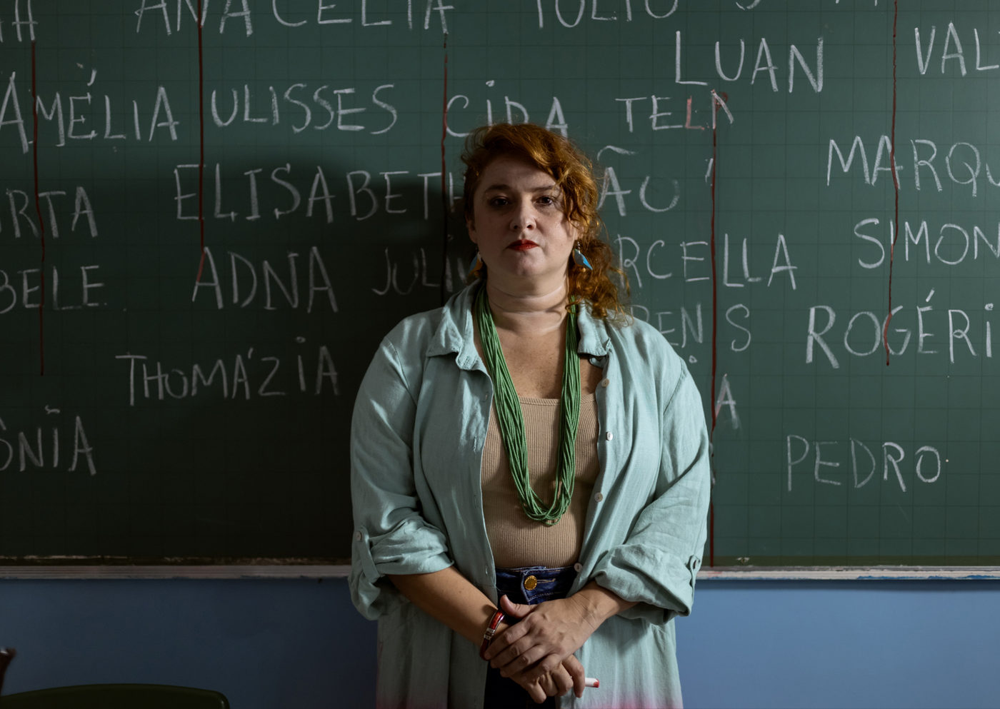

Angela Ribeiro estreia solo Belmira no Sesc Ipiranga, com direção de Carla Zanini

Espetáculo aborda trauma e resistência de professora sobrevivente de atentado escolar
O solo "Belmira", estrelado por Angela Ribeiro e com texto e direção de Carla Zanini, estreia no dia 13 de março, às 21h30, no Sesc Ipiranga, em São Paulo, dentro do projeto Teatro Mínimo. A peça segue em cartaz até 6 de abril, com sessões às sextas às 21h30, sábados e domingos às 18h30. A apresentação de quinta-feira acontece apenas na estreia.
O espetáculo propõe uma reflexão urgente sobre o medo e a insegurança nas escolas brasileiras, a partir da perspectiva de uma professora sobrevivente de um atentado escolar. Com uma encenação intimista, Belmira convida o público a mergulhar nas memórias e afetos de sua protagonista.
Sobre o espetáculo
A peça acompanha Marta, uma professora paraense que, após sobreviver a um atentado em sala de aula, relembra sua trajetória na educação e sua relação com a enigmática professora Belmira, figura central em sua formação e resistência. A narrativa é embalada por ritmos do Pará e inspira-se na vida e obra de Dona Onete, aclamada como a "rainha do carimbó chamegado" e ex-professora de História e Estudos Paraenses, além de militante sindical durante a ditadura militar.
"A peça é um resgate da minha essência e das minhas raízes. Me lembra que continuar faz parte da minha história. Me renova a esperança de um tempo que ainda vamos viver juntos." – Angela Ribeiro
A origem do texto e a importância do tema
O texto nasceu no curso piloto de dramaturgia do Instituto Brasileiro de Teatro (IBT) e foi motivado pelo impacto crescente da violência escolar no Brasil.
"A resistência de professores e artistas é uma força interna que nos move, mesmo diante do descaso, da precariedade e do medo." – Carla Zanini, autora e diretora
A peça também levanta discussões sobre ensinar em tempos de instabilidade, abordando a educação como um ato de coragem e afeto.
Ficha técnica e estética
A montagem é uma realização do Plataforma – Estúdio de Produção Cultural e aposta na proximidade com o público, marca do projeto Teatro Mínimo, que valoriza obras de pequeno porte com foco em dramaturgia e interpretação.
🎭 Trilha sonora original: Mini Lamers 💡 Iluminação: Gabi Souza 🎨 Cenário: Rager Luan 👗 Figurino: Gui Funari e Andy Lopes
SERVIÇO – Belmira
📍 Local: Sesc Ipiranga – Rua Bom Pastor, 822 – Ipiranga, São Paulo/SP
📅 Temporada: 13 de março a 6 de abril de 2025
🕓 Horários: ✔ Quinta-feira (13/03): 21h30 ✔ Sextas: 21h30 ✔ Sábados e domingos: 18h30
🎭 Duração: aproximadamente 60 minutos
🔞 Classificação indicativa: Livre
🎟 Ingressos: 💰 R$50 (inteira) | R$25 (meia-entrada) | R$15 (credencial plena)
🛒 Onde comprar:
Bilheterias presenciais nas unidades do Sesc SP